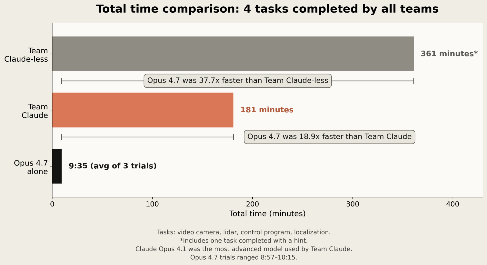
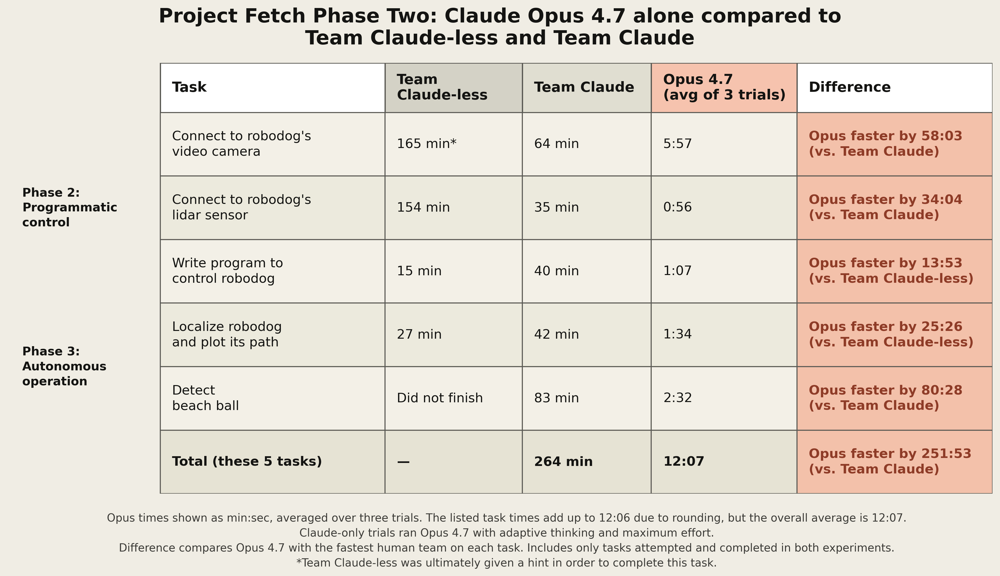
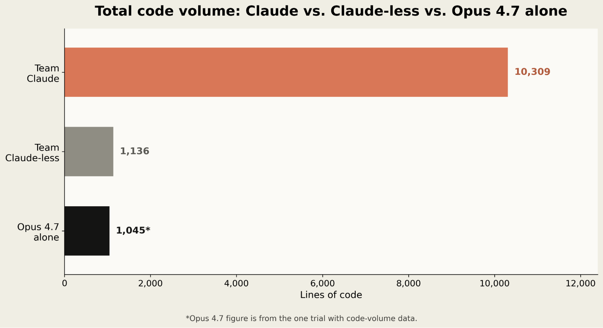
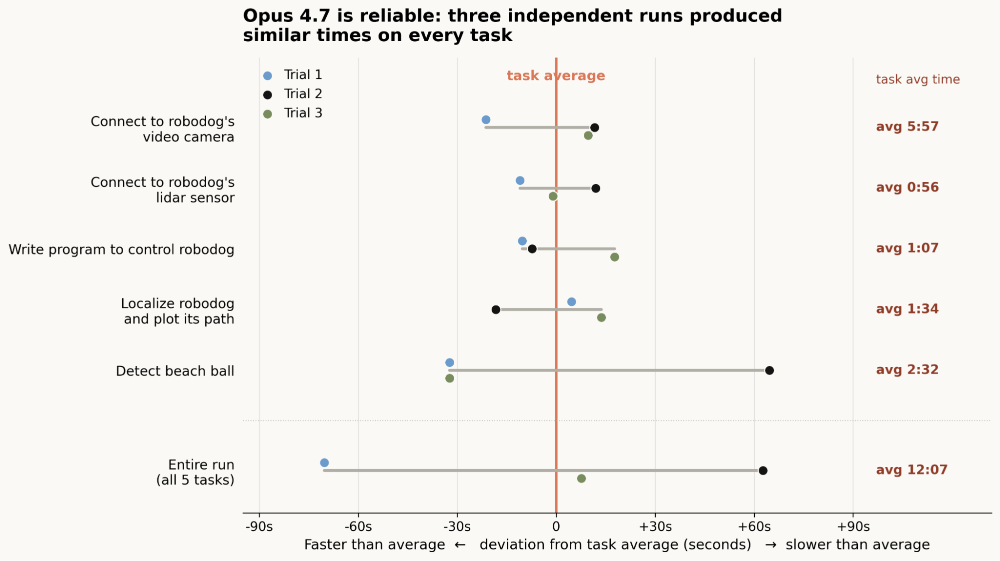

AI가 코드를 짜는 건 이제 놀랍지 않다. 그런데 그 코드가 브라우저나 서버가 아니라 실제 로봇개를 움직이기 시작하면 이야기가 달라진다.
Anthropic이 Project Fetch 2단계 결과를 공개했다. 실험은 단순하다. 비전문가 직원들이 로봇개를 다루던 작년 실험을 다시 꺼내서, 이번에는 Claude Opus 4.7이 Claude Code 안에서 거의 혼자 수행하게 했다. 결과는 꽤 선명하다. Claude Opus 4.7은 참가자들이 1년 전 완료했던 과제들을 가장 빠른 인간 팀보다 약 20배 빠르게 끝냈다.

이건 “로봇공학이 끝났다”는 뜻은 아니다. 오히려 반대다. Claude는 로봇의 센서에 붙고, 제어 코드를 쓰고, 공을 감지하는 일은 매우 빨라졌지만, 공을 섬세하게 밀어서 목표 지점으로 가져오는 마지막 물리 조작에는 실패했다. 그래도 중요한 변화는 있다. AI가 소프트웨어 도구를 쓰던 단계에서, 기성 하드웨어 도구를 다루는 단계로 넘어가는 초기 신호가 보인다는 점이다.
Project Fetch가 뭐였나
Anthropic은 2025년 8월에 Project Fetch라는 실험을 했다. 로봇공학 전문가가 아닌 직원들을 두 팀으로 나누고, 한 팀은 Claude를 쓰게 하고 다른 팀은 인터넷과 자기 능력만 쓰게 했다. 목표는 오프더셸프 사족보행 로봇, 즉 로봇개를 이용해 여러 작업을 수행하는 것이었다.
과제는 대략 이런 순서였다.
- 제조사가 제공한 컨트롤러로 로봇개 조작하기
- 로봇개의 비디오 카메라에 연결하기
- 라이다 센서에 연결하기
- 프로그램으로 로봇개를 수동 제어하기
- 로봇의 이동 경로를 추적하는 방법 만들기
- 비치볼을 감지하는 프로그램 작성하기
- 이걸 모두 합쳐서 공을 자율적으로 가져오기
당시에는 Claude를 쓴 팀이 훨씬 잘했다. 하지만 Anthropic이 따로 확인했을 때 Opus 4.1은 이 과제를 혼자 수행하지 못했다. 시작 단계인 “로봇에 어떻게 연결하지?”에서 막혔다.
이번 Phase Two의 질문은 이거다.
1년 가까이 지난 지금, 최신 Claude는 사람 도움 없이 어디까지 할 수 있을까?
이번 실험 방식
이번에는 사람 팀을 새로 부르지 않았다. 대신 Opus 4.7을 Claude Code에서 실행하고, 원래 실험의 일부 과제를 세 번 반복했다. Claude Code의 adaptive thinking을 켜고 effort는 최대치로 설정했다.
사람 연구자의 역할은 매우 제한적이었다.
- Claude Code가 돌아가는 노트북을 로봇개에 연결한다.
- 초기 프롬프트를 입력한다.
- 명령 실행을 승인한다.
- 다음 단계로 넘어가도 되는지 승인한다.
즉, 사람은 손발이 아니라 안전 승인자와 실험 진행자에 가까웠다. Claude가 직접 로봇을 물리 컨트롤러로 조작한 것은 아니고, 코드와 도구를 통해 로봇과 인터페이스했다.
숫자가 꽤 세다
핵심 결과부터 보자. 네 개 과제 기준으로, 인간 두 팀과 Claude 단독 실행의 총 소요 시간은 이렇게 갈렸다.

공통으로 완료된 네 과제에서:
- Claude 없는 인간 팀: 361분
- Claude를 쓴 인간 팀: 181분
- Claude Opus 4.7 단독: 9분 35초
Opus 4.7은 Claude 없는 팀보다 37.7배, Claude를 쓴 팀보다 18.9배 빨랐다.
다섯 개 과제를 기준으로 봐도 흐름은 비슷하다. Team Claude는 264분이 걸렸고, Opus 4.7은 평균 12분 7초가 걸렸다. Claude 없는 팀은 이 다섯 개 과제를 모두 끝내지도 못했다.

흥미로운 점은 단순히 빨랐다는 게 아니다. 인간 팀은 로봇개의 센서에 접근하는 여러 방법 사이에서 헤맸다. 어떤 SDK를 써야 하는지, 어떤 포트와 프로토콜을 봐야 하는지, 어떤 접근이 실제로 작동하는지 탐색하는 데 시간이 걸렸다. 반면 Opus 4.7은 비교적 빠르게 유효한 경로를 골랐고, 작성한 코드 상당수가 첫 시도부터 작동했다.
이 차이는 코드량에서도 보인다.

- Team Claude: 10,309줄
- Team Claude-less: 1,136줄
- Opus 4.7: 1,045줄
Claude 단독 실행은 Team Claude보다 거의 10분의 1 수준의 코드로 비슷하거나 더 나은 성과를 냈다. 이건 중요한 신호다. “많이 시도해서 맞춘다”가 아니라, 적은 탐색으로 맞는 인터페이스를 찾는 능력이 좋아졌다는 뜻이기 때문이다.
잘한 것: 인터페이스, 도구 선택, 첫 실행 성공률
Claude가 특히 강했던 영역은 로봇을 물리적으로 잘 움직이는 능력이라기보다, 로봇을 둘러싼 소프트웨어 인터페이스를 빠르게 장악하는 능력이었다.
구체적으로는:
- 로봇개의 비디오 카메라 연결
- 라이다 센서 연결
- 프로그램 기반 수동 제어 코드 작성
- 로봇 경로 모니터링
- 비치볼 감지
이런 작업은 전통적인 로봇 제어라기보다 “낯선 하드웨어 SDK와 센서 스트림을 빠르게 이해하고 붙이는 일”에 가깝다. 그리고 이건 요즘 코딩 에이전트가 강해지는 영역과 정확히 겹친다.
Anthropic이 강조한 포인트도 여기다. 이 성능 향상은 로봇 전용 학습의 결과가 아니다. 로봇공학 능력을 직접 강화하려고 대규모로 튜닝한 게 아니라, 일반적인 모델 스케일링과 코딩/도구 사용 능력 향상에서 자연스럽게 나온 부산물에 가깝다.

반복 실행 안정성도 꽤 좋았다. Anthropic은 Claude가 완료한 과제들에서는 절대 시간 기준으로 실행 간 편차가 작았다고 설명한다. 물론 완벽하지는 않았다. 예를 들어 공 감지에서는 구식 객체 탐지 알고리즘을 먼저 선택하는 실수도 했다. 그래도 우회해서 작동하는 해결책에 도달했다.
못한 것: 공을 섬세하게 밀기
가장 중요한 한계는 마지막에 나온다. Claude는 공을 감지하고, 로봇을 공 뒤쪽으로 이동시키고, 공을 출발 지점 쪽으로 밀어내는 시도까지는 했다. 하지만 결과는 잘 제어되지 않았다. 공을 목표 지점으로 안정적으로 가져오는 데는 실패했다.
왜 이게 어려울까?
이 과제는 단순한 “코드 작성”이 아니다. 로봇이 공을 밀었을 때 공이 얼마나 움직였는지 즉시 보고, 이전 명령과 현재 오차를 연결하고, 다음 입력을 조정해야 한다. 즉, 폐루프 제어(closed-loop control) 문제다.
사람은 손으로 컨트롤러를 잡고 몇 번 실패하다 보면 감을 잡는다. 공이 오른쪽으로 튀면 왼쪽에서 살짝 밀고, 속도가 너무 빠르면 멈추고, 로봇의 자세를 미세하게 바꾼다. 이건 언어적 추론보다 훨씬 촘촘한 지각-행동 루프다.
Claude는 아직 그 미세한 루프를 잘 못 잡았다. Anthropic도 이 실험이 저수준 actuation policy나 정교한 로봇 제어 정책 학습을 평가한 것은 아니라고 선을 긋는다. 다시 말해, Claude가 로봇공학의 어려운 부분을 해결한 게 아니라, 로봇을 둘러싼 소프트웨어 작업 대부분을 자동화하기 시작한 것에 가깝다.
그래서 의미가 뭔가
이 실험에서 제일 중요한 문장은 “20배 빨랐다”보다 이 패턴이다.
처음에는 모델이 인간을 돕는다. 그다음에는 인간이 모델을 돕는다. 마지막에는 모델이 상당 부분 혼자 한다.
Anthropic은 이 패턴이 사이버보안에서도 보였고, 이제 물리 세계와 AI의 접점에서도 나타나기 시작했다고 본다. 코딩 에이전트가 처음에는 개발자를 보조하다가, 지금은 파일을 직접 수정하고 테스트를 돌리고 PR 단위 작업까지 맡는 것과 비슷하다.
Project Fetch Phase Two는 그 전환이 하드웨어 쪽에서도 시작될 수 있음을 보여준다. 로봇개 자체가 새로 학습된 지능형 로봇이라서가 아니다. 오히려 기성 로봇개, 기존 센서, 기존 SDK, 기존 네트워크 인터페이스가 있었다. Claude가 한 일은 그 사이를 빠르게 읽고 붙이는 것이었다.
이게 무서운 지점이자 재밌는 지점이다. 현실 세계의 많은 장비는 이미 API와 소프트웨어 인터페이스를 갖고 있다. 드론, 로봇팔, 3D 프린터, 실험 장비, 공장 설비, 카메라, 센서 네트워크. AI가 “새로운 몸”을 얻는 방식은 꼭 휴머노이드 로봇을 처음부터 학습하는 것만이 아닐 수 있다. 이미 존재하는 물리 도구들의 사용 설명서, SDK, 로그, 에러 메시지를 읽고 붙이는 것만으로도 꽤 많은 일이 가능해진다.
하지만 과대해석하면 안 된다
이 실험을 보고 “LLM이 이제 로봇을 완전히 다룬다”고 말하면 틀린다. 정확한 해석은 이쪽에 가깝다.
- Claude는 낯선 하드웨어의 소프트웨어 인터페이스를 빠르게 파악했다.
- 센서 연결, 데이터 읽기, 간단한 제어 코드 작성에서는 인간 팀보다 훨씬 빨랐다.
- 하지만 실시간 물리 피드백이 필요한 정밀 조작에는 실패했다.
- 로봇 전용 정책 학습이나 저수준 제어 능력을 입증한 실험은 아니다.
- 그래도 “물리 에이전트 AI”의 초기 형태는 충분히 보인다.
이 구분이 중요하다. 지금의 LLM은 로봇의 근육이 아니라, 로봇을 쓰기 위한 기술문서 읽기·코드 작성·도구 연결 계층에 강하다. 그런데 현실의 많은 병목은 의외로 이 계층에 있다. 장비를 사놓고도 SDK 붙이는 데 며칠이 걸리고, 센서 데이터 포맷에서 막히고, 예제 코드가 안 돌아가서 프로젝트가 멈춘다. Claude가 이 시간을 10분대로 줄이면, 사람은 더 빨리 실제 실험과 조작 단계로 넘어갈 수 있다.
다음 관전 포인트
다음 단계는 명확하다. Claude가 공을 감지하고 로봇을 이동시키는 데서 끝나는 것이 아니라, 실패한 조작 결과를 보고 스스로 제어 전략을 수정할 수 있느냐가 관건이다.
즉 앞으로 볼 포인트는 세 가지다.
- 센서-행동 루프의 속도: 언어모델 추론 속도로 물리 제어 루프를 충분히 돌릴 수 있는가.
- 외부 제어 정책과의 결합: LLM이 직접 모든 걸 하지 않고, 작은 제어 모델이나 전통 로봇 알고리즘을 언제 어떻게 호출할 수 있는가.
- 실패 복구 능력: 공이 예상과 다르게 움직였을 때, 로그와 영상 피드백을 보고 전략을 바꿀 수 있는가.
이번 실험은 답보다 질문을 더 많이 남긴다. 하지만 질문의 위치가 바뀌었다. 예전 질문은 “LLM이 로봇에 연결이나 할 수 있을까?”였다. 지금 질문은 “연결과 기본 제어는 됐는데, 정밀한 물리 루프까지 갈 수 있을까?”다.
그 차이가 크다.
소프트웨어에서 봤던 일이 하드웨어에서도 반복될 수 있다. 처음엔 사람이 AI를 들고 일한다. 조금 지나면 AI가 일을 하고 사람이 승인한다. 더 지나면 AI가 대부분 혼자 한다. Project Fetch Phase Two는 그 세 번째 단계가 아직 완성되지는 않았지만, 적어도 문 앞까지 왔다는 신호다.
원문: Anthropic Research, Project Fetch: Phase two